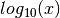
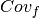
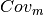

CCD Tools
¶
Introduction
Installation
Windows
Anaconda installation
Git installation
(Optional) MiKTeX
Installing ccd_tools
OLD
Installing the Anaconda Python distribution
Installing the DD tools
(optional) Installing MiKTex
Problems
Linux
Python - general
Getting Started: CCD-tools with Anaconda
Getting Started: CCD-tools with Virtualenv
Getting Started: ccd-tools with Jupyter Notebooks and Virtualenv
Supplementary installation instructions
Old installation guide
Getting Started
Workflow
Batch files
Windows
Linux
Example: Fitting one spectrum
Example: Fitting multiple spectra using a time regularisation
Fit Routines
ccd_single
Environment variables
Command line options
Usage Examples
ccd_time
Environment variables
Command line options
Regularisation Parameters
ddps.py
Command line options
Theory of SIP models
Overview
Mathematical helper terms
Debye decomposition resistivities
complex
real and imaginary parts
Derivatives
Relating peak frequency of imaginary part to relaxation time
Peak relaxation times
Debye decomposition on conductivities
complex
real and imaginary parts
derivatives
Cole-Cole decomposition resistivities
complex
real and imaginary parts
partial derivatives
Partial derivatives respect to :
Cole-Cole decomposition conductivities
complex
real and imaginary parts
partial derivatives
Partial derivatives respect to :
Formulation using the dielectric constant
Transformation to conductivity
Coverage


Literature
Integral Parameters
Inversion and implementation details
Inversion
Jacobian
Usage and implementation details
Input Data files
Input data formats
Output Files
ascii_audit format
ascii format
Starting Models
Model 1
Model 2
Model 3
Notes on possible conductivity extension
Best practices
Normalization
Determining relaxation time ranges
Using the Cole-Cole distribution
Creating synthetic relaxation time distributions
Profiling and Debugging
Debugging notes
Testing and characterization
API
lib_dd package
Subpackages
Submodules
lib_dd.Jacobian module
lib_dd.base_class module
lib_dd.int_pars module
lib_dd.interface module
lib_dd.plot module
lib_dd.plot_stats module
lib_dd.starting_parameters module
lib_dd.test_functions module
lib_dd.version module
Module contents
lib_dd.conductivity package
Submodules
lib_dd.conductivity.model module
Module contents
lib_dd.io package
Submodules
lib_dd.io.ascii module
lib_dd.io.ascii_audit module
lib_dd.io.helper module
lib_dd.io.io_general module
Module contents
Indices and tables
¶
Index
Module Index
Search Page
Time-lapse Cole-Cole decomposition routines
Navigation
Introduction
Installation
Getting Started
Fit Routines
Theory of SIP models
Inversion and implementation details
Usage and implementation details
Profiling and Debugging
API
Related Topics
Documentation overview
Next:
Introduction
Quick search